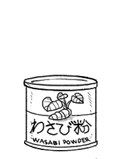

wasabi powder
Wasabi powder is made from the dried, grated flesh of the wasabi root. It has a light lime coloring and sharp, hot taste and aroma. Most of the wasabi powder that is sold internationally is not 100 percent wasabi, but a mixture of mustard, horseradish and color additives (due to the high cost of the root).
Wasabi powder has a long shelf life, it will retain its taste if kept in a cool and dry place.
How to make wasabi paste: To make wasabi paste, mix 1:1 quantity of wasabi powder and water, mix well. The texture should be a bit dry. Cover wasabi and allow to sit for 15 min to allow the enzymes to work, doing this helps bring out the full flavors of the wasabi.
wasabi root
Wasabi, or Wasabia japonica, is part of the family Brassicaea which includes horseradish and mustard. It is primarily cultivated for its rhizome, which has a fiery, mustard-like flavor and pungent fragrance.
Wasabi is difficult to grow, which makes it expensive to buy. Wasabi is sold as a rhizome or as a dried powder. Fresh wasabi is served with a grater and served to the table right away, because it loses flavor very quickly once it's made into a paste. Fresh Wasabi root will keep, wrapped and refrigerated, for up to two weeks.